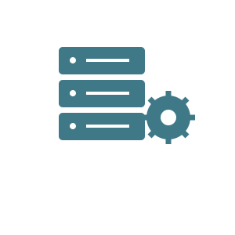

El frontend es la parte de una página web con la que interactúa el usuario directamente: los textos, imágenes, botones y animaciones que se ven en el navegador. Se construye principalmente con HTML, CSS y JavaScript, siendo este último el encargado de darle interactividad y dinamismo a los sitios. Un buen frontend busca que la experiencia del usuario sea agradable, rápida y fácil de utilizar, sin importar el dispositivo desde el que se acceda.

El backend es la parte del desarrollo que ocurre del lado del servidor y que el usuario no ve directamente. Se encarga de procesar la información, gestionar bases de datos y aplicar la lógica de negocio de una aplicación. Lenguajes como PHP, Python, Java o C# son muy utilizados para construir esta parte, ya que permiten manejar grandes cantidades de datos y conectar la aplicación con distintas fuentes de información de manera segura.
Un desarrollador full stack es aquel que domina tanto el frontend como el backend, siendo capaz de construir una aplicación web completa de principio a fin. Este perfil es muy valorado en el mercado laboral, ya que permite entender el funcionamiento integral de un proyecto. Combinar conocimientos de distintos lenguajes y tecnologías facilita la comunicación entre equipos y la resolución de problemas en cualquier parte del desarrollo.